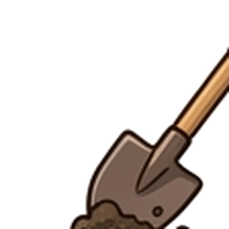
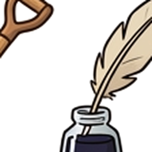
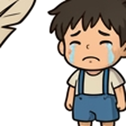
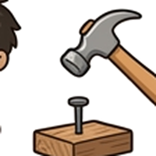
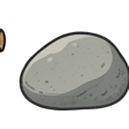
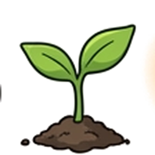
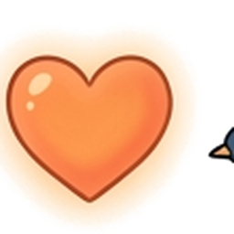
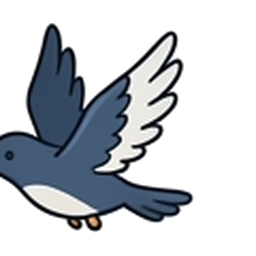

「啊，好可憐、好悲慘喔！」艾絲特沙啞的說：「小野蜂，我愛你。」
那一天，我們都很無聊，想做點什麼好玩的事情。艾絲特在草地上發現了一隻死掉的野蜂。牠身上有黃黑色的條紋，毛茸茸的，翅膀皺在一起，小小的腳垂了下來。
艾絲特一向很勇敢，直接把野蜂捧在手心。但我還小，生命裡有好多事情會讓我感到害怕，我也害怕死亡。全部我認識的人裡面，還沒有人死掉過。
面對「死亡」與「離別」，小朋友心中常有許多小問號。點選下列卡牌翻面，看看我們能如何溫柔面對：
「我要挖個墳墓，把牠埋起來。」艾絲特挖了一個深深的洞，我也在一旁寫了一首詩，寫著關於死亡的哀悼。我將詩寫在墓碑的小石頭上。
我們把小野蜂埋進黑黑的洞裡，再撒下小藍花的種子，然後用黃花和紅花排成漂亮的圈。這就是我們成立公司前，為牠舉行的一場溫暖葬禮。
艾絲特突然想到：「世界上到處都有死掉的動物。每叢灌木後頭都有一隻死掉的小鳥、蝴蝶或是老鼠。一定要有好心人願意花時間為牠們舉行葬禮。」我們決定成立這家公司，分工合作：



我們精心準備了一個沉甸甸的箱子，裝滿了舉辦世界上最棒葬禮所需要的一切，這讓我們的公司看起來非常專業：



艾絲特打給鄰居推銷我們的服務，幫倉鼠努努辦葬禮，收費十塊錢，並保證「永久保固照顧墓地」。
當努努的小主人哭得很傷心時，普特拉著她的手安慰說：「等小努努好一點以後，我們再把牠挖出來。」雖然有些荒謬，但普特的天真卻給了悲傷一點溫暖的微笑。
隨後我們忙得不可開交：艾絲特爸爸給的死公雞、冰箱裡的鯡魚、奶奶捕鼠器抓的九隻老鼠。我們全都為牠們舉行了命名儀式與葬禮。
「我將妳命名為寶拉，而你是薛爾。我們把其中一隻胖老鼠取名為小豬胖胖。」
雖然這些葬禮都沒讓我們賺到錢，但我們的祕密基地漸漸變成了一個真正的美麗墓園。
「只有這些一點也不起眼的小動物！下次我們乾脆埋死蒼蠅算了，不然就埋那些螞蟻。」艾絲特生氣了，因為大家都沒錢付給我們，她渴望為一隻巨大又壞脾氣的野豬辦葬禮。
普特問：「是被車撞了？還是被槍打中了？」這給了我們靈感。我們沿著大馬路往前走，拖著裝滿十字架和石頭的重箱子，尋找被車撞到的動物。
我們在馬路旁發現了一隻扁掉的刺蝟。艾絲特戴著爸爸的皮手套，把牠放進棺材盒裡。接著，我們又發現了體型龐大的兔子「費迪南」。
艾絲特準備了小行李箱，還鋪了枕頭和毯子。普特哭著問：「那我呢？我死的時候，有沒有枕頭？」「有啦，你死的時候有你最愛的那條毯子，還有泰迪熊、蛋糕和果汁。」普特這才安心地擦乾鼻涕笑了。
我們走在大馬路旁，突然看到兩隻烏鶇在樹叢間追逐。
接著，其中一隻「砰」的一聲，猛烈撞上了陽臺的玻璃窗，掉在我們腳邊。
我們蹲在小鳥旁邊。牠拍了拍翅膀，打開嘴巴，雙腳抽動了一下……就這樣躺在那裡一動也不動。僅僅幾秒鐘，牠死去了。
這是我第一次親眼看見活生生的生命在我面前死掉。我全身顫抖，完全忘記了害怕，一路抱著牠走到秘密基地。
我們為牠取名為「小爸爸」。空地裡濃密的樹葉圍繞在上方，像是教堂宏偉的拱頂。我們在最漂亮的石頭上刻了「小爸爸」。我抱著小鳥，朗讀著我寫的詩：
另一隻烏鶇在樹梢高聲唱著動聽的歌，艾絲特默默地流下眼淚，大家都沉浸在莊嚴而神聖的氣氛中。悲傷，像一塊大黑布輕輕覆蓋住這裡。
普特和艾絲特都很喜歡「我」寫的詩。點選底部的詩句卡牌，為逝去的小生命拼湊出一首動人詩篇吧：
作者烏爾夫透過溫馨、幽默又溫柔的文字，引導我們重新看見生命的循環與尊嚴：


死亡只在瞬間。之後，小草和青苔依然成長，墓旁的花朵綻放，一切歸於平靜……
拉動下方滑桿，體驗時間與大自然的流逝：
第二天，我們又忙著去玩別的遊戲了。